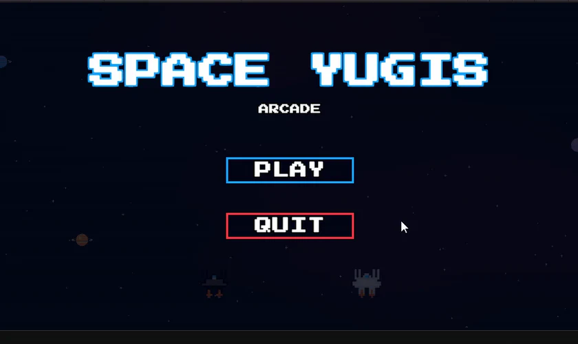
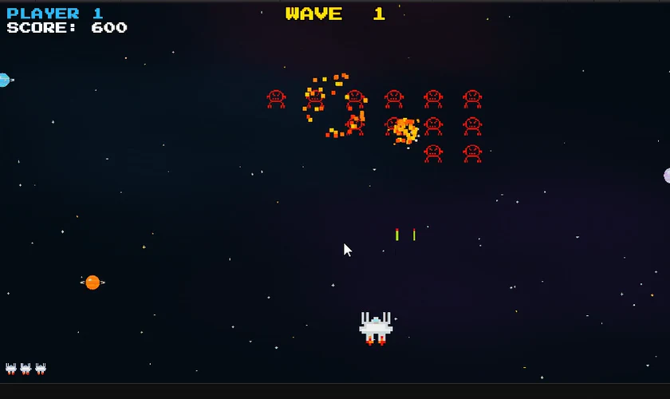
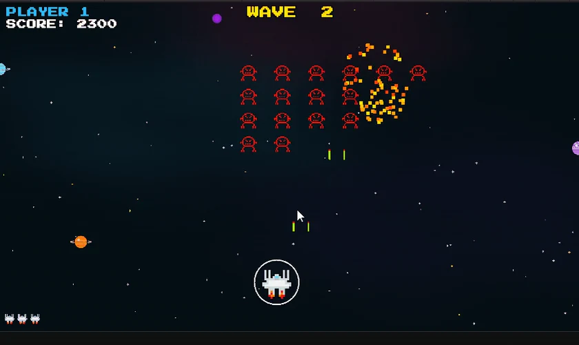

Space Yugis
A 2D arcade shooter inspired by Space Invaders. Play alone or with a second player, collect power-ups and survive enemy waves, bosses and meteors.
- Engine
- Unity 6 (6000.3.7f1)
- Language
- C#
- Development period
- 2 Sep 2026 – 7 Oct 2026
- Development span
- 5 weeks
The dates run from my first gameplay commit to version 1.0. I updated the README on 28 Oct 2026.
How it plays
Choose a ship, dodge enemy fire and look for upgrades as the formation moves across the screen. Later waves can grow wider, and the camera makes room for the larger formation. Bosses and meteors change where it is safe to fly.
Images






Gameplay clips
C# examples
Camera zoom between waves
The camera zooms out smoothly to fit larger enemy formations.
private void UpdateCameraZoom()
{
if (gameplayCamera == null || !gameplayCamera.orthographic)
return;
gameplayCamera.orthographicSize = Mathf.MoveTowards(gameplayCamera.orthographicSize,
targetCameraSize, cameraZoomSpeed * Time.unscaledDeltaTime);
}Wider enemy formations
After a set wave, the formation gains columns at regular intervals. A maximum keeps it from growing beyond the designed width.
int columns = Mathf.Max(1, baseCols);
if (currentLevel >= widerFormationStartWave)
{
int extraColumns = 1 + (currentLevel - widerFormationStartWave) /
Mathf.Max(1, wavesPerExtraColumn);
columns += extraColumns;
}
return Mathf.Min(columns, Mathf.Max(1, maximumFormationColumns));Formation descent
When the formation reverses direction, it can step down if its timer has elapsed. The bottom limit prevents enemies descending too far.
direction *= -1;
if (Time.time < nextAllowedDescentTime)
return;
float safeDescent = Mathf.Max(0f, descentAmount);
if (GetFormationBottom() - safeDescent < lowestEnemyMovementY)
return;
formationContainer.position += Vector3.down * safeDescent;
nextAllowedDescentTime = Time.time + minimumDescentInterval;